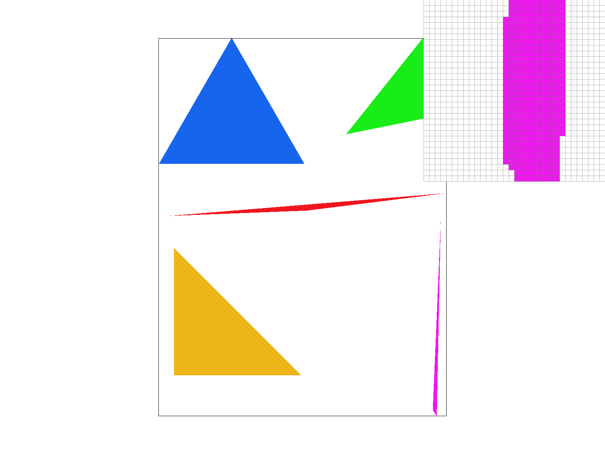
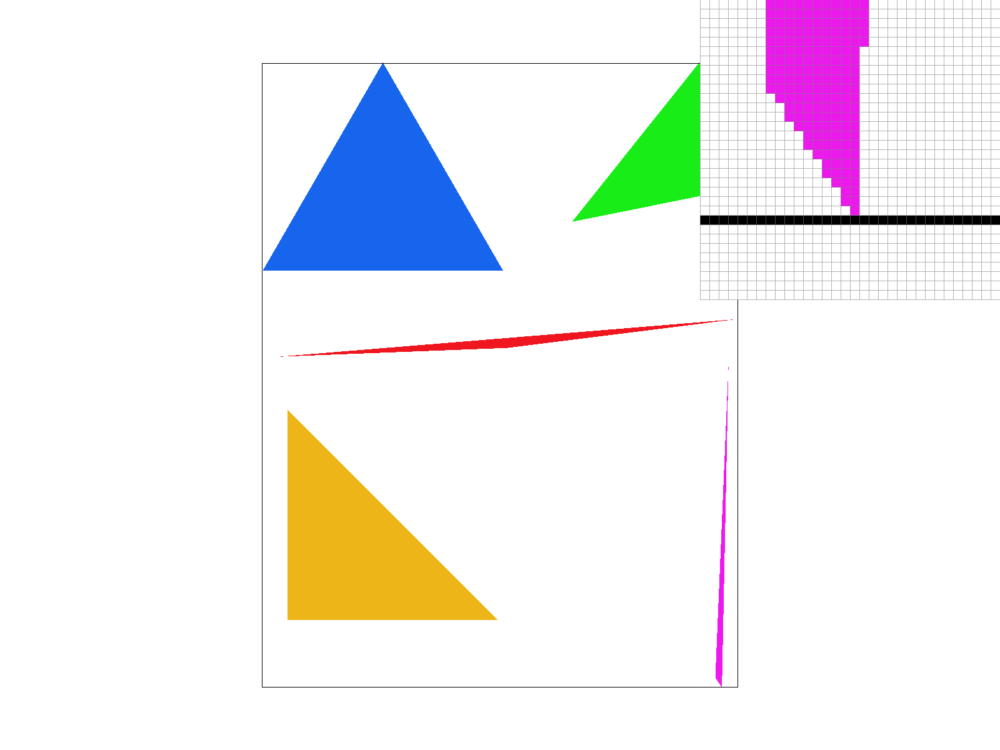
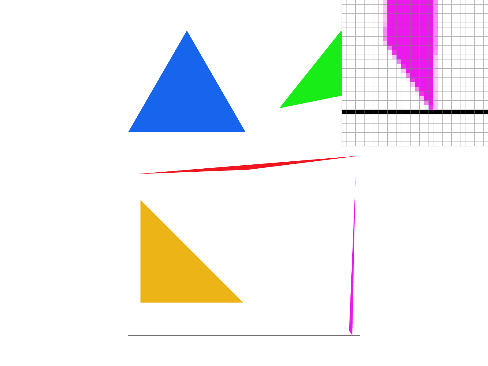
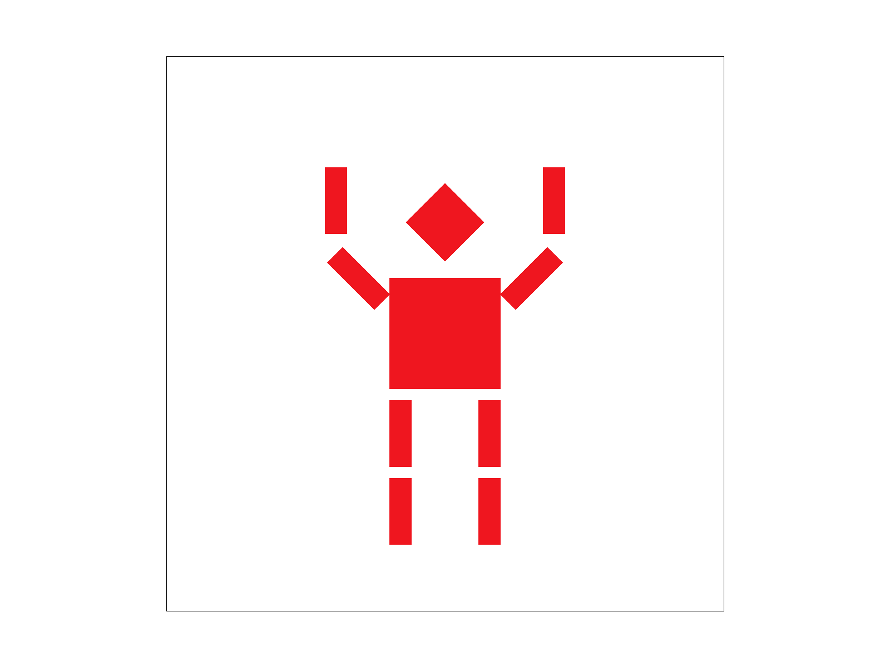
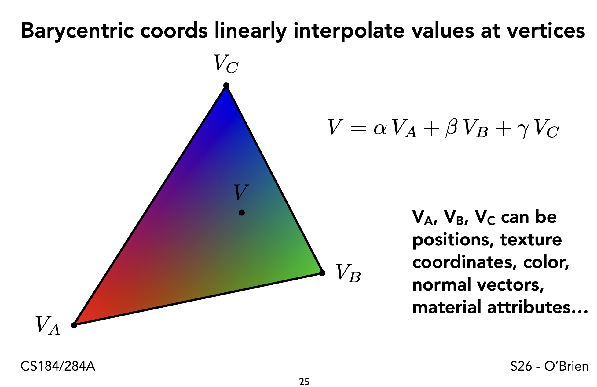
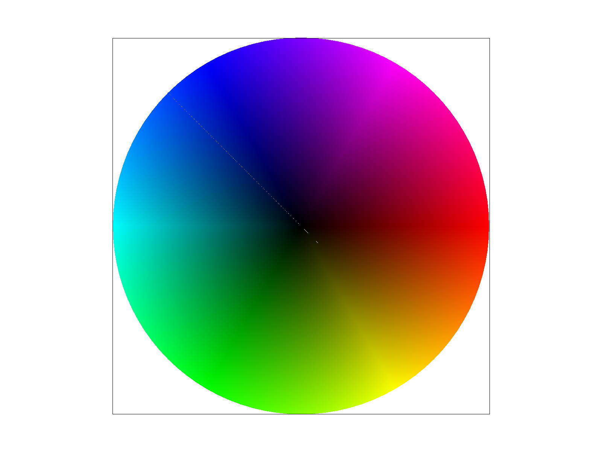
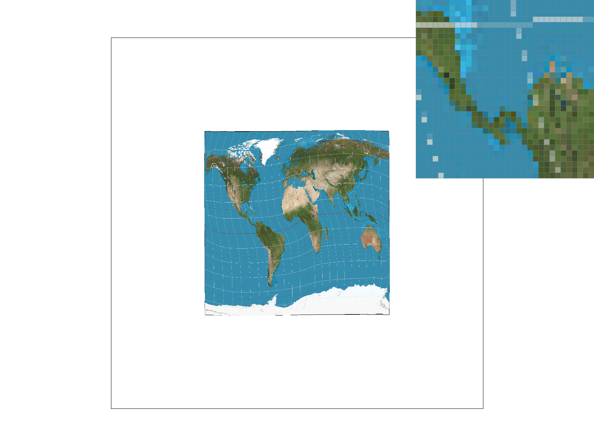
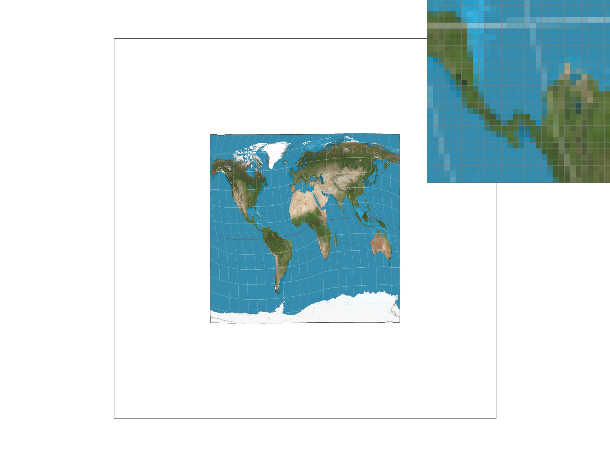
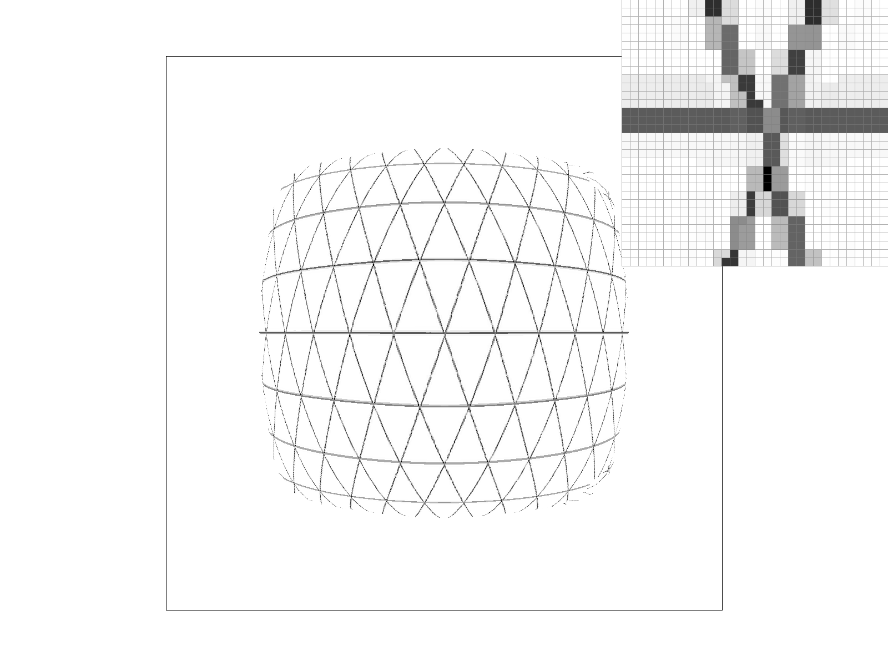
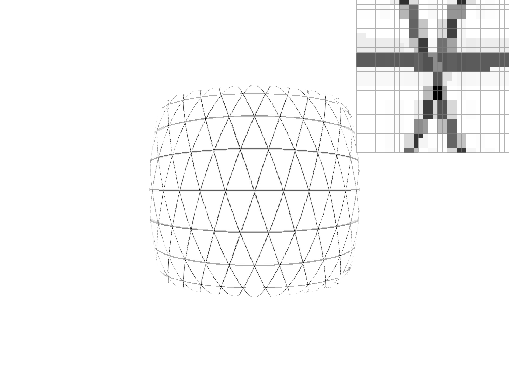

For this task, I implemented a simple rasterizer that samples every single pixel in the bounding box of the triangle. Since this rasterizer first computes the bounding box, and only checks pixels in the bounding box, it is no worse than one that checks each sample within the bounding box of the triangle
Firstly, we check to see if the winding order of the triangle is correct. If not, we will swap to vertices p0 and p1 to achieve the correct winding order.
Then, we compute the bounding box of the triangle.
Finally, we loop through every pixel in the bounding box, and determine whether that pixel is in the triangle, by combining three different checks of "is this pixel on the correct side of this line?". This check is done by taking a dot product of a vector from p0 to the point, with a vector that is normal to the line. This dot product can be compared to zero, to check if the point is on the positive or negative side of the line.
The final result is a correct rendering of test4 (see below)

For this task, I decided to resize the sample_buffer so that it could hold
width * height * sample_rate pixels. This helps, because when we rasterize a triangle,
we can now sample at a higher resolution, and fill the sample_buffer at this higher
resolution. Then, we downsample by taking the average of a square of sample_rate
pixels, inside the function resolve_to_framebuffer. This gives the triangles a smoother border
and more natural look.
In the 3 pictures below, we can see that as the sample rate increases, the border looks smoother. This comes at the cost of higher compute, since the sample rate of 16 is sampling a 4x4 grid of points, for each pixel!
|
 |
|
 |
For this part, I implemented the three types of transforms (scale/translate/rotate), and I saw a successful rendering of the robot.
I modified the SVG file (and saved it as "my_robot.svg" in this repository), to show a robot that raised its arms, as if it was cheering. The result is shown below.

A Barycentric coordinate system is used to identify the coordinates of a point P, relative to the three vertices of a reference triangle. The coordinates are given in three numbers, alpha, beta, and gamma, with their sum always being equal to 1.
From a linear algebra point of view, we know that P = alpha * P_1 + beta * P_2 + gamma * P_3. This allows us to think of alpha, beta, and gamma, as representing how close P is to each vertex of the reference triangle.
The slide below, from Professor O'Brien's lecture, shows how barycentric coordinates can be visualized.

Barycentric coordinates can be useful for rasterizing a triangle, and interpolating the colors inside the triangle between the 3 vertices. The weighted sum of barycentric coordinates gives a natural way to take a weighted sum of the colors in the 3 vertices.
Below is the result of rendering test7. I am not sure why there is a line
in the blue region
that doesn't quite look right.

For this task, I implemented pixel sampling, which is a transformation from screen coordiantes to texture coordinates. This allows us to render a texture on a triangle that is being rendered on the screen, and carry over the texture, as if the triangle holding the texture is being stretched and translated.
Two different methods of sample are to use the nearest pixel, and to use bilinear interpolation. Using the nearest pixel is simpler (it only involves rounding the coordinate), but bilinear interpolation gives a better result, which captures the colors from the texture more wholistically. Bilinear sampling is achieved by picking 4 pixels around the point we need to sample, and then linearly interpolation 3 times, to get a linear interpolation at the point we are sampling.
|
|
|
|
 |
 |
Generally, we expect a big difference between the different sampling methods when the pixels change quickly over a short space. If the texture contains adjacent pixels with large variations, then nearest sampling would go to one of the extremes, while bilinear would return something in between. However, if adjacent pixels int he texture don't change much, then all sampling methods would return values that are close.
Level sampling is the idea that we can store a mipmap, which is a precomputed blurred version of the original texture. This allows us to sample from various levels of the mipmap, which will give cleaner looking results that don't have moire artifacts.
To choose the right level, we need to know the answer to "how many texels in the texture does the current pixel on the screen occupy?". This question is answered by computing the derivative of the map from screen space to texture space, and taking the texture resolution into account, in the way that the assignment spec describes.
Pixel sampling, level sampling, and the number of samples per pixel are three different anti-aliasing techniques we can now use.
Pixel sampling is the best for antialiasing when we need to smoothly transition between two texels in the texture space. It is not too computationally expensive, since it only requires interpolation between additional texels in the texture space, with no new transformations calculated.
Level sampling is the best when we have a pixel on the screen which occupies a lot of texture space. This will smooth out the high frequency noise in the texture, which prevents anti aliasing. It is overall pretty cheap too, only costing some extra storage for the mipmap, and some derivative calculations to determine the appropriate level.
Increasing the number of samples per pixel is another powerful anti aliasing technique. This one is the most computationally expensive, and requires a lot more memory. However, it is conceptually simple and easy to understand.
|
|
 |
|
 |
|